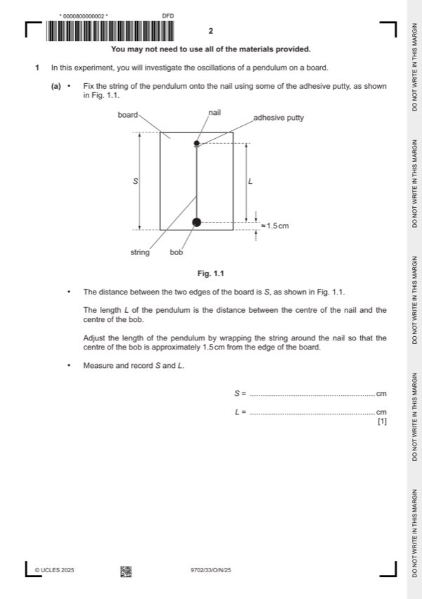

Question 1

Original paper page 2
Part 1(a) — solution
Value of S in the range 38.0 cm to 42.0 cm. 1
Mark points
- Include the ideas shown in the solution above.
Part 1(b) — solution
Value of T in the range 1.0 s to 4.0 s. 1
Repeats: At least two values of nT, time where n ⩾ 2. 1
Mark points
- Include the ideas shown in the solution above.
Part 1(c) — solution
- The presentation of quantity and unit must conform to accepted scientific convention e.g. no unit for and T 2 / s2 or
- T 2 (s2)
Mark points
- The presentation of quantity and unit must conform to accepted scientific convention e.g. no unit for and T 2 / s2 or
- T 2 (s2)
Part 1(d)(i) — solution
Axes: 1
Axes must be labelled with the correct quantities.
Scales must be chosen so that the plotted points occupy at least half the graph grid in both the x and y directions.
Scale markings are no more than 2 cm (one large square) apart.
Sensible scales must be used, no awkward scales (e.g. 3:10 or fractions).
Plotting of points: 1
All observations in the table must be plotted on the grid.
Diameter of plotted points must be ⩽ half a small square.
Points must be plotted to an accuracy of half a small square in both x and y directions.
Quality: Trend of points must be positive. 1
All points in the table must be plotted on the grid for this mark to be awarded.
S
It must be possible to draw a straight line that is within 0.2 (to scale) on the axis (normally x-axis) of all plotted points.
h
Mark points
- Include the ideas shown in the solution above.
Part 1(d)(ii) — solution
Line of best fit: 1
‘Best fit’ is judged by the balance of all points on the grid (at least 5 points) about the candidate’s line.
There must be an even distribution of points either side of the line along the full length.
Lines must not be kinked or thicker than half a square.
Some candidates may choose to identify an anomalous point. If six or more points are plotted and they identify one point as
anomalous (e.g. by circling or labelling) then this point is to be disregarded when judging the line of best fit. There must be
at least 5 points left after the anomalous point is disregarded.
University Press & Assessment 2025 Page 8 of 11
9702/33 Cambridge International AS & A Level – Mark Scheme October/November 2025
Mark points
- Include the ideas shown in the solution above.
Part 1(d)(iii) — solution
- Intercept read directly from the graph, with read-off at x = 0,
- y = mx + c or an equivalent expression
Mark points
- Intercept read directly from the graph, with read-off at x = 0,
- y = mx + c or an equivalent expression
Part 1(e)(i) — solution
- Value of A = candidate’s gradient value and 1
- value of B = candidate’s y-intercept value
Mark points
- Value of A = candidate’s gradient value and 1
- value of B = candidate’s y-intercept value
Part 1(e)(ii) — solution
Correct calculation of g with correct unit, e.g. cm s–2 1
University Press & Assessment 2025 Page 9 of 11
9702/33 Cambridge International AS & A Level – Mark Scheme October/November 2025
Mark points
- Include the ideas shown in the solution above.